A family biography
A documented life, 1871–1926
This is not a family-tree sketch dressed up as a life. It is a biography written only from records that have been seen, transcribed, or honestly marked as prior-session images. Every factual claim carries a numbered endnote. Endnotes name the creator of the record, where it lives, whether the image or only a transcription was read, and a link when one exists.
Confidence is printed in the open:
Proven two or more independent identifiers, no unresolved contradiction.
Probable the weight of evidence favors it; a missing original or an open conflict remains.
Possible a serious lead that has not passed the same-person test.
Speculative family lore, unsourced trees, or compiled lineage not re-proved here.
Disproved a record that cannot stand against earlier, better evidence.
The research question is one sentence: reconstruct, to genealogical-proof standard, the documented life of deceased Dora Ella Newnam, later Stone — parentage, marriages, children, residences, migration, death, and burial — and write a cited biography, not a thin parentage abstract.1
The identity chain is Proven as one woman. The eight-year-old in Elias Newnam’s house on 5 June 1880, the fourteen-year-old bride of 10 December 1885, the twenty-eight-year-old wife of 1900, and the Dora Stone who died at Ola on 23 August 1926 are the same person: name, parents, the nickname “Doll,” the son Coy as informant, and an age trajectory of 8 → 14 → 28 → 55.2 The only contradiction is the death certificate’s birth year, which cannot stand.3
What remains below proven is printed as such: the day of the month in August; the exact identity of Samuel’s mother; where Dora slept in April 1910 and January 1920; the license for the Stone marriage; and whether T. A. Stone is the Missouri-born tie maker in Howell Township.
Lee County did not exist when Elias and Mary farmed at Travellers Rest. The General Assembly cut it in 1870 from Breathitt, Estill, Owsley, and Wolfe and set the seat at Beattyville, where the North, Middle, and South Forks become the Kentucky River.4 Dora’s 1870 absence from that Owsley house is therefore not a missed child in a new county. It is a child not yet born, in the parent county, on 7 June.8
The valley she grew up in was Sturgeon precinct — Magisterial District 6 on the 1900 schedule, Precinct 7 in 1910 — along Sturgeon Creek above the Three Forks.1931 The postal name Banford, which Pearl later wrote as her birthplace, was not opened until 26 May 1902. A woman born in 1895 could only use that name after the office existed.24 Kentucky did not keep statewide death certificates until 1911. Arkansas did not keep them until 1914. Those two dates explain why Samuel’s death and Dora’s 1926 certificate sit on opposite sides of a records wall.59
The 1890 population census, which would have caught Dora as an eighteen-year-old wife and mother (or not), was destroyed in the Commerce Department fire of 10 January 1921. The 1890 veterans schedule for Lee County survives in transcription and is the prior-session source for Elias’s service as a bugler.60 The photographs that follow are later views of that country, not of her. Beattyville on the river was photographed in 1930;61 the South Fork fence in 1940;62 the courthouse in a federal survey and again in 2014.63
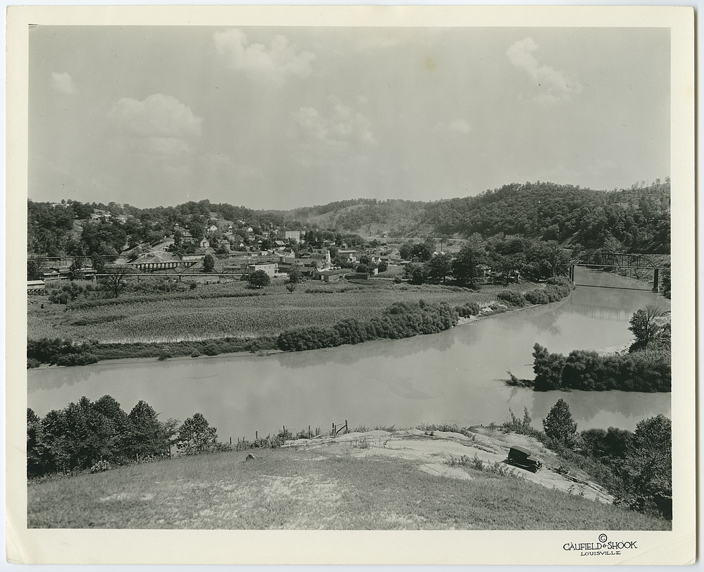
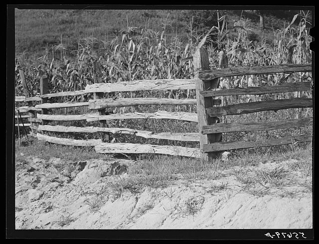
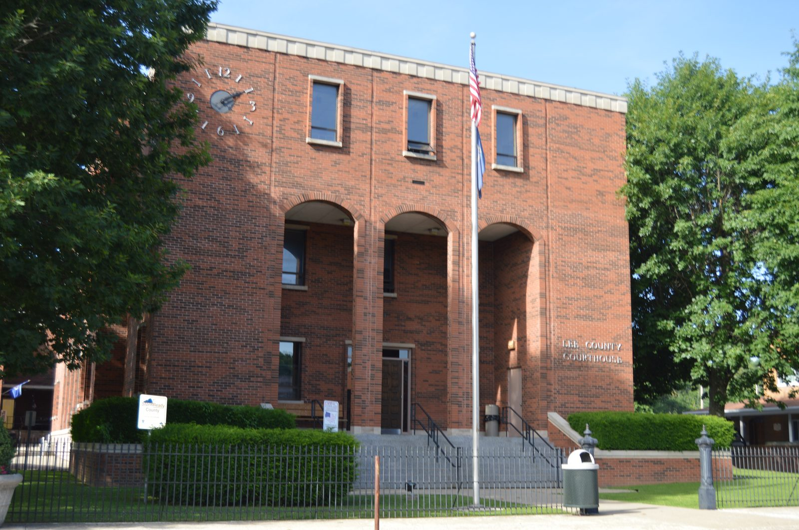
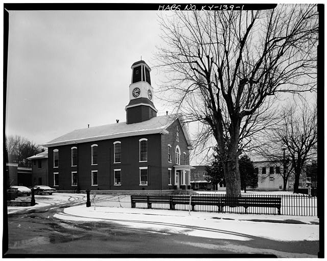
Lee County, Kentucky, was only ten years old when the enumerator James J. Hampton walked District 59 in the first week of June 1880. The county had been cut in 1870 from Breathitt, Estill, Owsley, and Wolfe around the Three Forks of the Kentucky River.4 On 5 June, at dwelling 46, he listed a farmer, Elias Newnam, 38, and his wife Mary, 38, both Kentucky-born, with six children still at home: William, 21, at the plough; Malissa, 16; Francis, 14; Mary, 10; Dora, 8; and Catharine, 6.5
That single line — Dora, daughter, 8, Kentucky — is the childhood record. The surname on the page is Newnam, not Newman. The given name is clear. The age is a single digit, not 3 or 5.5 A Soundex clerk later extracted the same household onto two cards, N-550, volume 18, enumeration district 59, sheet 6, line 11. The continuation card reads: “Newnam, Dora D 8 Kentucky” and “Catharine D 6 Kentucky.”6
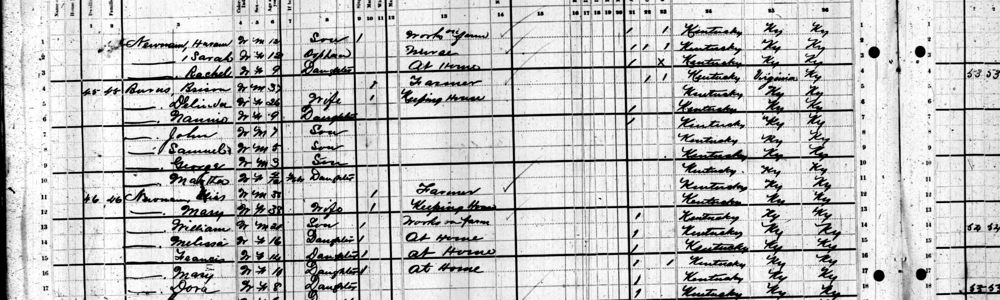
10thcensus0427unit frame n730. Image seen. Endnote 5.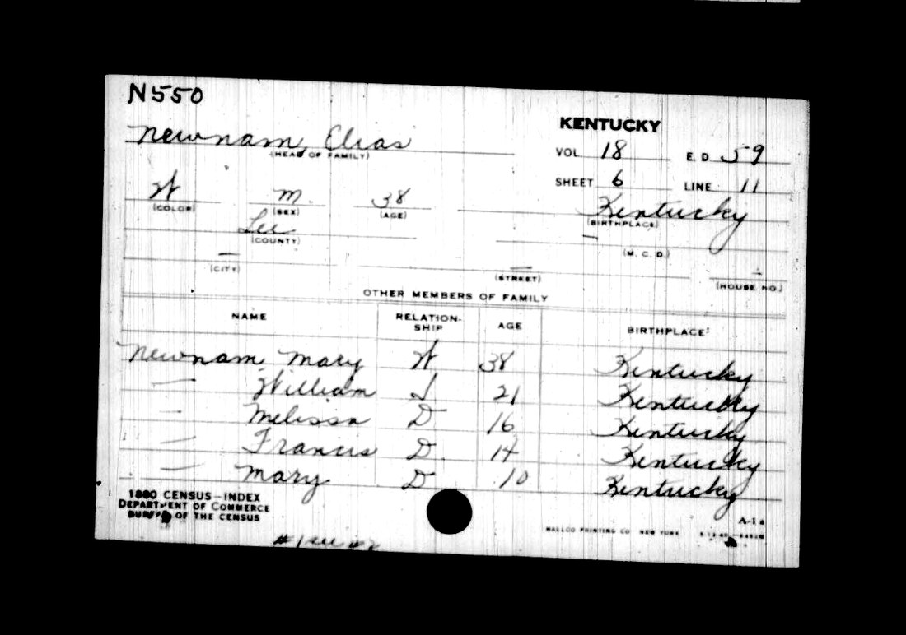
soundex1880ky055 frame n2105. Image seen. Endnote 6.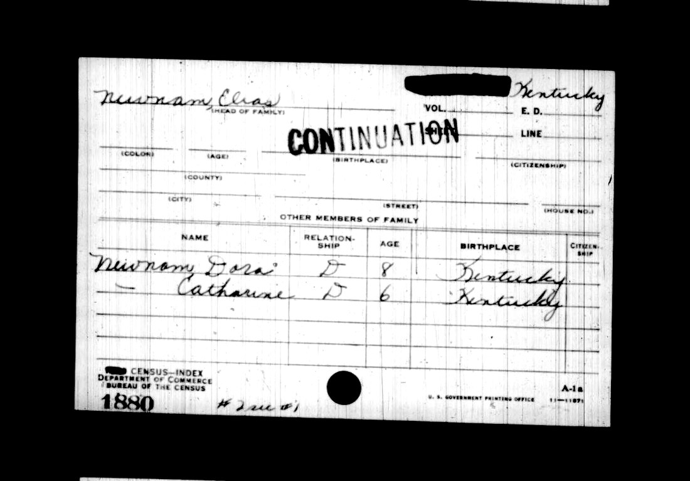
A child aged eight on 1 June 1880 was born between June 1871 and June 1872. The 1900 schedule would later give August 1871. The 1885 marriage return would call her fourteen. Those three records agree.7 The 1926 death certificate, filled by a son fifty-five years later, writes 11 August 1868 and age 58 years 12 days. That year is Disproved. A child born in August 1868 would have been eleven in June 1880, not eight.3 The day, the 11th, is Possible — only the certificate supplies a day, and nothing contradicts it.
On 7 June 1870 Elias and Mary were still farming at Travellers Rest in Owsley County with William D., 11; Malissa D., 6; Frances, 3; and Mary, 1. There is no Dora. She had not been born.8 That absence independently kills 1868.
The parents on the 1880 schedule are the couple her death certificate would name: Elias Newnam and Mary Smallwood. Probable — the certificate is secondary for parentage; the child is in their house; the 1885 wedding was “at Doll Newnam’s.”9 Neighbors on the same page were also Newnams — Joseph, 38, next door, and John, 60, the household after — the interlocking clan of Sturgeon Creek.5
Elias, known as Doll, is recorded in a prior session as bugler of Company C, 14th Kentucky Cavalry, 16 August 1862 to 16 September 1863. Mary Ann Smallwood, born April 1842, was a Smallwood of the Owsley line. Those military and cemetery facts were gathered earlier and were not re-imaged for this book; they are cited as prior-session claims, not as pages read today.10
A compiled Boone descent — Daniel Boone → Levina (Scholl) → Leah (Newnam) → Henry Harrison → Elias → Dora — appears on WikiTree and on a Kentucky Landmark marker at the Newnam Cemetery in Pebworth. It is Speculative in this case. The steps beyond what this file cites have not been independently re-proved here and are not printed as family fact.11
Lee County Marriage Book 2, as transcribed by Debi Houser Kendrick, records the wedding in one packed entry:
The original page (FamilySearch film Q2QD-PZHL) has not been seen from this machine. The citation is therefore a derivative. The fact of the marriage is still Proven: the 1900 schedule independently says they had been married fourteen years.13
Fourteen is young. Book 2 also records other brides of sixteen; the record is a first marriage at her father’s house with her father as witness. It does not, by itself, prove coercion.14 The clerk’s “both parents born Owsley” is a slip. Elias’s own records place his birth in Clark County on 18 April 1842. Teenage bride or busy clerk: “where we lived” for “where born.”15
Samuel was family. On the first page of the same district, dwelling 3, enumerated 1 June 1880: Samuel, 11, son of John Newnam, 69, farmer (born Kentucky, father North Carolina), and Mary, 57 (born Kentucky, both parents Kentucky), with Eli 16, Susan 20, and Hannah 9.16 Age 11 in June 1880 is the June 1869 birth of the 1900 husband and the sixteen-year-old of December 1885. Identification of that boy as the groom is Probable.
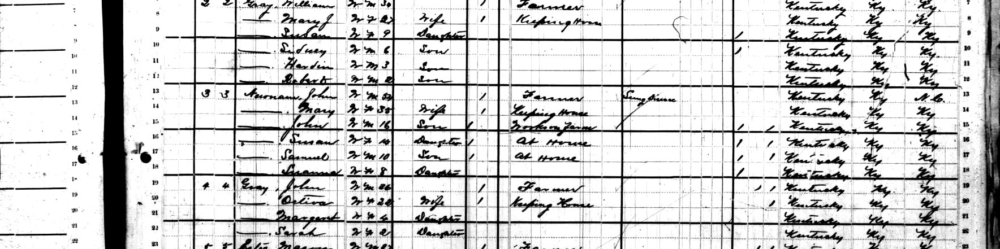
A second Samuel, about 13, on sheet 2 of the same district is Samuel McQueary, not a Newnam. He is rejected.17
Ten years earlier, on 29 June 1870, Sturgeon Precinct household 19 held Newman, John, 50, farm labourer; Elizabeth, 25, keeping house; and Samuel, 1, with eight others. Elizabeth is the right age for the widow who later took Pearl.18 The 1870 and 1880 households are not the same house with a bad enumerator. John ages 50 → 69 in ten years. The wives are Elizabeth 25 versus Mary 57. The children’s names do not carry over. Conflict #9 stays open. This book will not print “son of Elizabeth” or “son of Mary” as fact.
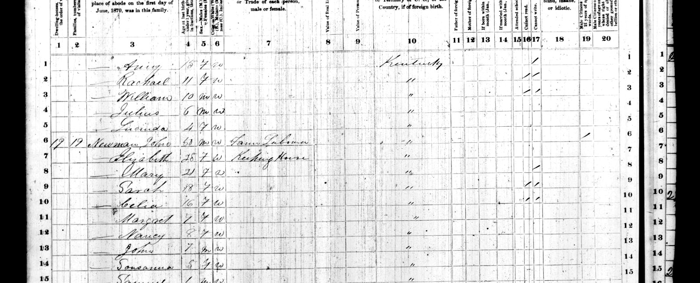
populationschedu0481unit frame n69. Image seen. Endnote 18. Not silently merged with Plate 3.They stayed in Sturgeon precinct. The original 1900 population schedule — read for this book from NARA T623 reel 537, Lee County ED 52, sheet 4B — was enumerated on 5 June 1900 by Morgan J. Treadway. At dwelling 67, family 67:19
| Name | Relation | Born | Age | Notes |
|---|---|---|---|---|
| Newnam, Samuel | Head | June 1869 | 30 | Married 14 years; farmer; KY/KY/KY |
| Dora E. | Wife | August 1871 | 28 | Married 14 years; 7 children born, 5 living |
| McCoy | Son | April 1890 | 10 | Farm laborer |
| Mary M. | Daughter | June 1892 | 7 | |
| Pearl | Daughter | March 1895 | 5 | |
| Rissa | Daughter | May 1897 | 3 | |
| John H. | Son | August 1899 | 9/12 |
The Kendrick transcription of the same precinct agrees on the household and adds the neighbors: James P. Gillespie at 66, Huram Smith at 68.20 The original upgrades that transcription from the only source to a check.
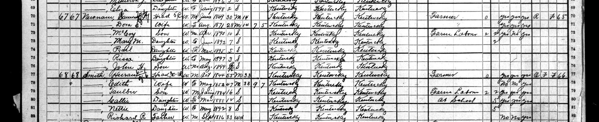
12thcensusofpopu537unit page 940. Image seen this session. Endnote 19.Two of seven children had died by 1 June 1900 (2/7). That is 286 per 1,000 of her births. The Wilson 95 percent interval is 82–641 per 1,000 because n = 7. This is not a county infant-mortality rate and must not be compared to a state rate without a defined cohort of all Sturgeon births, 1886–1900.21 Their names are unknown. The gap between the wedding and Coy’s birth leaves room for at least one of them.
Two daughters later named their parents on Social Security applications (NUMIDENT files read in a prior session, not re-opened here). Mary Magdalene (Newnam) Bunch: born 12 June 1893, Beattyville; parents Sam P. and Dora Newnam.22 Pearl P. Jackson: born 15 March 1895, Banford; parents Sam and Dora; died Shelby County, Tennessee, 19 September 1980.23 The 1900 year for Mary (June 1892) and the NUMIDENT year (1893) disagree by one; both are printed. Banford as a post office opened on Sturgeon Creek on 26 May 1902 — after Pearl’s birth — so the application uses the postal name the valley later carried.24
Two days before the 1900 enumerator reached Samuel’s house, a Newnam funeral had already been held in the precinct. John Newnam, 37, married farmer, died of consumption on 5 March 1900, son of John and E. He is not Samuel — Samuel was alive on 1 June — but he is the only Newnam in Lee County’s surviving 1900–1904 vital-statistics death dump.25
Samuel disappears from free records after that June. WikiTree’s 24 February 1906 is unsourced lore. Speculative as a date.26 What is not lore: by April 1910 Pearl, fifteen, was in Owsley County in the house of her widowed paternal grandmother Elizabeth, with her widowed aunt Susan Angle. Dora is not in that house.27 A grandmother does not take in a granddaughter whose father is alive and farming next door — inference, not a record. Death before April 1910 is Probable.
He was not a Kentucky Newman household head that April. The statewide 1910 Miracode N-550 S-names run Sam of Knox, Samuel of Newport, a Black Samuel Noonan, a Louisville Samuel, Samuel C of Butler, and Samuel E, 41, of Muhlenberg with wife Lou E — wrong wife, wrong children, wrong county.28 He is not in Lee County’s 1911–1929 death index, not in the year-by-year certificate extracts 1912–1929, not in the surviving vital-statistics dumps for 1874–1878 or 1900–1904, not on the Proctor Cemetery transcript, not on the 2001 High View / Newman Cemetery transcript, and not in the Booneville Baptist association obituaries for 1883–1904.29 The next Kentucky gap is not a missing Lee book. The state archives inventory lists Lee deaths for 1874–1878, 1900–1904, and 1911–1967 — not 1905–1910.72 Owsley’s surviving 1907–1910 vital-statistics dumps have been read in full. Samuel P. is not in them. The only Newnam is Lester, thirteen months old, who died at Pebworth on 15 April 1909; his parents were Robert and Sallie Newnam. That infant is not Samuel.71 A 1904 Lee license for an S. P. Newnam, 30, second marriage, to Rosa L. Banks is not merged: the age is wrong for a man born in 1869.30
Dora herself is not in Sturgeon in April 1910 under Newnam or Newman. The original 1910 schedules for Sturgeon Magisterial District 7, ED 99 — every sheet, 1A through 13B — contain other Newnam households (Richard and Sarah; Reuben and Nannie; John and Ollie; a different John H. with a grown son Malcum). None of them is Samuel, Dora, Coy, or the 1899 child.31 The 1900 dwelling number 67 was reoccupied: Hamilton on sheet 4A, Garrett on sheet 6B.32 Her parents, Elias (“Elisa”) and Mary (Smallwood) Newnam, were a couple alone at Proctor, ED 100, dwelling 19/20. She is not in their line.33
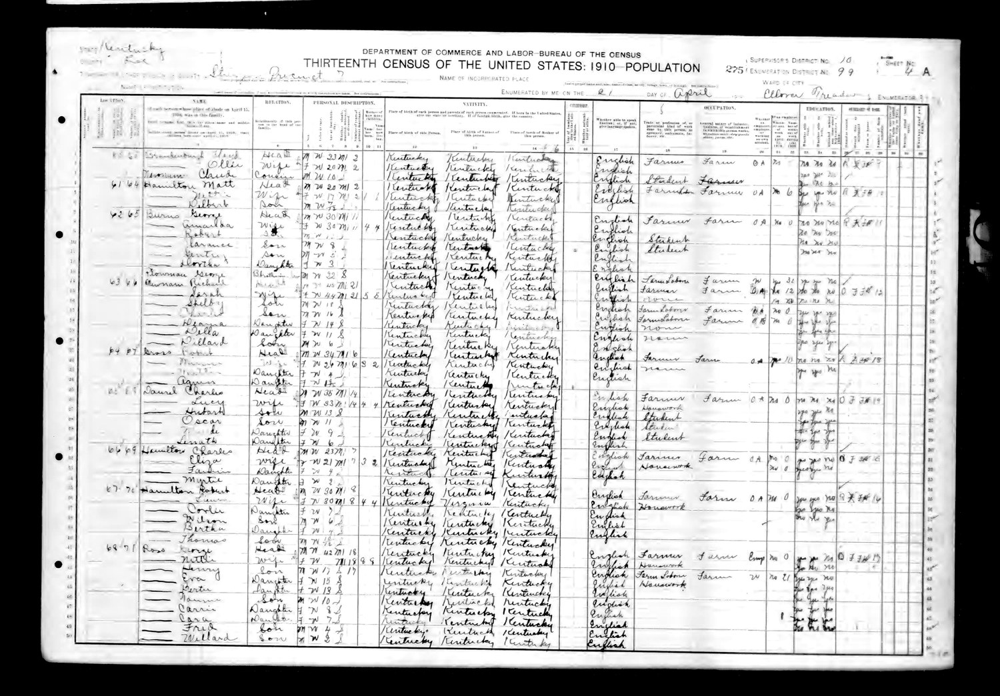
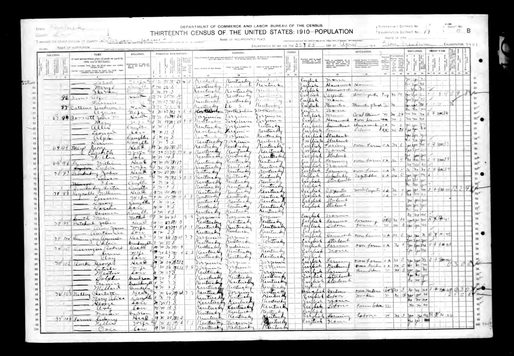
Statewide Soundex negatives close the easy escapes. In April 1910 she is not indexed as Newman/Newnam Dora of the right age in Kentucky, Arkansas, Missouri, Oklahoma, or Texas; Coy is not a McCoy or Coy card in Kentucky, Arkansas, Missouri, or Tennessee; she is not a Kentucky Dora Stone (two other Dora Stones fail race or age); she is not a Kentucky or Arkansas Peebles/Peeples wife or head named Dora ~39.34 Lee County marriage books 5–19 (1896–1926) contain no Peebles surname and no Dora Newnam remarriage.35
A third married name (hypothesis H3) is still open for surnames other than Peebles. Soundex indexes heads and some individually carded persons. A wife Dora in a Johnson household would not appear in the Dora Newman slots. Negatives are for the indexed name, not for “she was not in the state.”
Two marriages, not three: Samuel in 1885 Proven; T. A. Stone in 1920–26 Probable. A Peebles union between them is not supported by the records searched.36
The family’s Arkansas anchor is her eldest son. On 18 February 1917 McCoy Newnam married Letha Viola Sullivan at Ola, Yell County.37
By January 1920 Coy was at Danville, Yell County, a boarder-head with wife Letha. Dora was not in his house, and she was not anywhere in Arkansas as Dora Stone or Dora Newnam on the statewide Soundex read in a prior session.38 She was not in Kentucky as Newman Dora ~48 (three other Doras — Paducah 29, Cumberland 10, Logan 28 — fail age and parents).39 Derivative OCR scans of the 1920 Soundex reels for Oklahoma, Tennessee, and Missouri found no Dora Newman; Kentucky S-350 found no Dora Stone.40 Perry County, Arkansas, marriage books F and G (1916–1930) have Peoples, not Peebles, and no license for Dora × T. A. Stone. The second marriage, if it was licensed, is more likely in Yell than in Perry.41
Her father almost certainly was still in Beattyville. The original 1920 schedule, ED 111, sheet 6A, enumerated 12 January by Harry L. Perkins, dwelling 106, family 114:42
| Name | Relation | Age | Occupation |
|---|---|---|---|
| Burke, C.B. | Head (owns free) | 40 | Postmaster, Beattyville |
| Provie | Wife | 30 | Assistant postmaster |
| Vivie M. | Daughter | 14 | |
| Vedia G. | Daughter | 10 | |
| George P. | Son | 3[?]/12 | |
| Newman, E.T. | Grand Father | 75, widowed | None |
| Combs, Bertie | Boarder | 32 | Clerk, railroad office |
| Miller, Warren C. | Boarder | 23 | Superintendent; born Pennsylvania |
E.T. Newman, 75, is Probable Elias T. “Doll” Newnam. Initials, Lee/Beattyville, age within two years of a man born 18 April 1842, and — independently — he is the grandfather of Provie, not of C.B. In 1900 Provy Hoover, 13, was Elias’s granddaughter at Proctor. On 28 September 1904 the marriage book remarks, “E. T. Newnam Granfather appeared,” at Chas. B. Burke × Provie Hoover. Charles B. is the son of George Burke. The enumerator wrote Grand Father for the wife’s grandfather.43 Provie is Probable the child of Mary L. Newnam (Elias’s 1880 daughter Mary) and James Hoover, married 10 February 1886. She is not Dora.44 The Soundex card’s “Grand Ave.” is not written beside this dwelling on the original sheet.
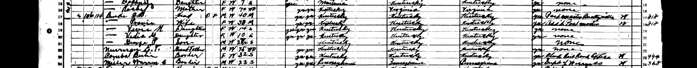
14thcensusofpopu586unit PDF page 14. Image seen (inverted from the film). Endnote 42.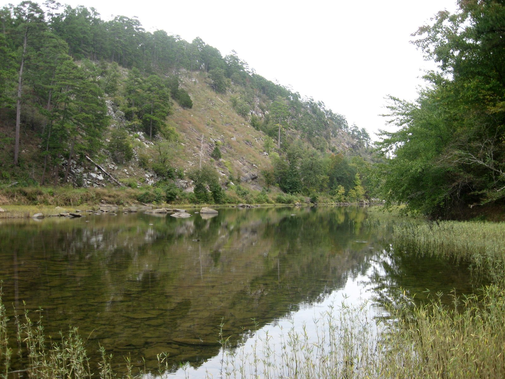
Tom A. Stone, 62, widowed, born Missouri, a tie maker, was father-in-law in Tom M. Randall’s house in Howell Township, Perry County, on 24 February 1920 — the only widowed T. A. Stone in that statewide index, read in a prior session.45 Identification of the certificate’s “T. A. Stone” with that man is Probable: same initials, a widower in the next township to Carter Cove, a 1925 burial in the yard where she would be laid. His marker, in the 1993 Daniels and Cossey copy, says 1845–1925; the census implies about 1858. Conflict #4. The 1925 Arkansas certificate is the document that will settle it.46
The closest 1900 Missouri Thomas Stone by age is a woodchopper in Buchanan Township, Douglas County: Thomas, born May 1856, age 44, married 18 years to Nancy E., with five daughters at home — Etta M., Minnie J., Martha L., Rosena, and Ossie P. The Soundex clerk misread Ossie P., daughter, as Jesse C., son.47 That household is not merged with 1920 Tom A.: no middle A., a living wife Nancy, one identifier only. The Cooper nephew is twenty-four. The Thomas A. card — February 1868, wife Matilda, daughter Gertrude M. — is Greene County Campbell Township, Volume 33, ED 37, sheet 18, line 25; not Dunklin.69 Dunklin’s village of Campbell (ED 47, sheets 1–7) has been read. He is not there.68 On the population schedule, ED 37 sheet 17A line 25 is not Thomas A.; sheet 18A line 25 is Thomas A., Matilda, Gertrude, and Ivory Jenkins, grandmother — dwelling 362, enumerated 27 June 1900.7378 That is the best name match to 1920 Tom A. and still fails the age test (32 in 1900 vs 62 in 1920). Other ED 37 spot sheets and an ED 38 sample are nil for a duplicate household.75 This book will not average 1845, 1856, and 1858 into a fake birth year.
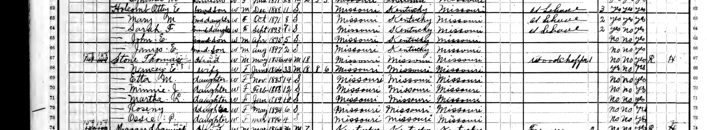
Dora Stone died at noon on 23 August 1926 at Ola, Yell County, Arkansas, of apoplexy after one day, attended by Dr. Thomas W. Beal. Coy Newnam of Ola was informant. The certificate (file/cert. 1524) names her spouse T. A. Stone and her parents Elias Newnam and Mary Smallwood, gives her residence as “Mammoth, Ark.,” and sends her the next day to Carters Chapel.48 The certificate image was supplied by the user in a prior session and was not re-opened for this book. There is no Mammoth post office in Yell or Perry; Nimrod is the Perry-side office. The handwriting hypothesis is untested against the image. This book does not “correct” the place.49
Daniels and Cossey, copying Carter Cove Cemetery on 5 February 1993, found “Newman, Dora” without dates — the name of the husband of her youth, and of the son who buried her — and “Stone, Thomas, 1845–1925.”50 Find A Grave returned HTTP 403 from this environment. No photograph of either stone is in the case file.
She was fifty-five if she was the eight-year-old of District 59. The certificate called her fifty-eight. The child on sheet 6 is the better witness to her beginning than the grieving son was to a date he never saw.51
Ola itself — once Petit Jean, renamed 10 December 1880, incorporated 1900 — was a Rock Island junction town in timber, wheat, fruit, and cotton country. The Yell County Journal (Ola, 1925–1934) is the newspaper that should have carried her obituary. It is not freely digitized. That pull remains on-site at the Arkansas State Archives or a Danville or Plainview library.52
Elias died on his birthday, 18 April 1932, at Beattyville, age 90. That death extract was read in a prior session.53 Mary Ann had already died on 11 July 1918 and lies at Brandenburg-Quillen, Heidelberg — also prior.54
William D. Newnam, the eldest of the 1880 house, married Judaliza Durbin on 19 July 1889 with Doll Newnam as a witness. A funeral notice in the Valley Morning Star of Harlingen, Texas, 3 January 1939, names him at about 80, widow Juda L., and living sisters Frankie Jones of La Grange, Mary Peters of Lexington, and Melissa Eastes of Lexington. Dora is not listed. She had been dead thirteen years. That absence is expected, not a contradiction.55
Elizabeth Newnam of Idamay, in a will dated 15 January 1922 and proved 14 May 1934, left all her property to her granddaughter Pearl Jackson and Pearl’s husband Clyde.56 That is the same Pearl who sat in Elizabeth’s Buck Creek house in 1910, and the same Pearl whose Social Security account names Sam and Dora.
Rissie (May 1897) and John H. (August 1899) remain thinly documented after 1900. A Herbert Newman born 8 August 1899 in Lee County, Virginia, to Jerome and Hattie Hughes, is a different boy.57 Knoxville Stamper/Pelfrey trails for Rissie are Possible only; this book will not close them from WikiTree. Living name-collisions were not used.
Proven (negative) Every B-side of Greene County, Missouri, ED 38 — forty-one sheets — has now been read from NARA T623-855. Combined with the A-sides, ED 38 is closed. Enumeration districts 37 through 43 are name-column swept. The only Stone head in that band remains Thomas A., thirty-two, with Matilda and Gertrude, on ED 37 sheet 18A. He is still not merged with the 1920 Perry County widower.85
The compiled Yell County cemetery index, captured 30 October 2026, repeats the 1993 copyists: Newman, Dora, no dates, Carter Cove; Stone, Thomas, 1845–1925, same yard. Those rows are derivatives, not photographs of the stones.86
Internet Archive item beatty holds six Beattyville Enterprise issues only. On 30 November 1928: “Uncle Doll Newman has been very sick.” On 1 April 1932: E. T. Sparks of Hazard was visiting Uncle Doll Newnam. Elias died seventeen days later. Nickname + town + lifespan: Probable the same man as her father.87 1926 is not among those six issues, not in the UK film-year list, and not in Internet Archive’s 1926 title search.88
Lee Marriage Book 23 records the license the paper hinted at: Clay Dunigan, 23, of Idamay, married Ladona Newman, 16, of Delvinta, on 15 March 1932. Her parents are Shelby Newman and Grace Brandenburg — not Dora, who had been dead five years. Living descendants of that couple are omitted.89 Everett Newnam of Idamay, fifty, died 13 December 1939 of an accidental pistol wound — Probable the 1932 cane-planter. His daughters are living and are not named.90 Rev. Luther Newnam officiated Beattyville weddings from at least 1926 through 1933; he is not Samuel.91
Rev. Luther Newnam died at Beattyville on 28 February 1945, aged fifty-four years and seven days, born there 21 February 1891, son of William Newnam and Katherine Sternberg, husband of Cora Plummer. A death-register extract and the 1 March 1945 Enterprise agree. He is Probable the 1932 Christian Church pastor. The notice names one surviving brother, Fred of Irvine — not Everett, Frank, John, or Grant — so Luther’s father William stays unmerged from Elias’s son William.92
Shelby Newnam, twenty-one, son of Richard Newnam and Sarah Damrell, married Gracie Brandenburg, fifteen, on 4 September 1913. That couple — not Samuel P. — are the parents on Ladona’s 1932 license. Ladonna Newman Dunigan (1915–1984) and Clay Dunigan (1908–1986) lie at Dunaway Cemetery.93
On 28–29 September 1936 a coal truck left Kentucky 21 east of Berea. Edward Newnam, Everett’s son, was killed; Clifton Newman, seventeen, son of Grant of Berea, died the next day. Edward had been staying with uncle and aunt Grant Newman.94 Grant bonded to Martha Brandenburgh on 12 August 1899. Martha died 18 February 1951 with Grant living; their son William’s 11 July 1955 notice called Grant “the late.” Grant is Probable one man and not Frank the contractor of Berea (conflict #20).95
Rev. and Mrs. Robert Spicer of Lower Buffalo were living grandparents when Linda Lou Spicer died, aged three, on 3 May 1944 — Probable the same Lower Buffalo couple as Everett’s sister “Mrs. Robert Spicer.” Callie’s own death is unread.96
The 1926 week Dora died is still unread in original paper. The Yell County Journal (Ola, 1925–1934, LCCN SN90050035), the Danville Democrat (1899–1927), and the Dardanelle Post-Dispatch (LCCN SN89051008, not digitized) were living titles. Internet Archive holds none of those 1926 issues. A Chronicling America “Stone Ola Arkansas” 1926 search hits Osceola, not Yell.97
Melissa, the sixteen-year-old in Elias’s 1880 house, died 11 April 1957 as Melissa Newnam Estes Miller, ninety-three, daughter of Elias T. and Mary Ann Smallwood Newman, born 22 November 1863. The Enterprise of 18 April 1957 and the 1957 year-file agree. Funeral 14 April at Beattyville Christian Church; buried Riverview. Survivors: son Herman Estes of Brasstown, North Carolina; stepson Johnnie E. Miller; granddaughter Ruby Booth. Same-person versus 1880 Malissa: parents plus birth year. Proven as Dora’s sister. Dora is not named — she had been dead thirty-one years.98
The 1926 Callie Newnam on the Lee death extract is Everett’s wife, not his sister. She died 27 April 1926, parents Sam Moore and Mary Brandenburg. Dorothy Newnam, one year old, died 6 October 1926 at Idamay; her extract names father Everett and mother Callie Moore. Callie (Newnam) Spicer of Lower Buffalo was still living in May 1944. Conflict #21.99
A Frank Newnam died 16 March 1928 at St. Helens, born 4 October 1853, parents William Newnam and Rhoda Tincher. He is not Everett’s brother Frank the contractor of Berea, living 13 December 1939. Conflict #22. Do not merge William × Rhoda with Luther’s William × Katherine.100
On 29 May 1915 a stillborn daughter of Grant Newnam and Martha Brandenburg was recorded at Willow. The Kentucky death-index row “NEWMAN, Grant 1” (volume 026, certificate 12938, age U/1) is that infant, not Grant of Berea’s death. Grant × Martha of 1899 / 1915 / 1936 is Probable one couple; he is still not Everett’s brother (conflict #20).101 The 1951–1955 “late Grant” window is Disproved as a death date — see pass 65.102
Samuel P. still has no published will. October 1887 Lee claims are nil for Newnam. FamilySearch catalog IDs for the unread films are locked: court orders 1870–1919 = 127869; order books 1894–1922 = 964964; probate 1870–1967 = 127913; wills 1873–1945 = 127891; tax 1870–75 = 156057; tax 1879–92 = 97277; Lee WWI cards = 1146342. Kentucky Historical Society and KDLA hold matching probate and order-book film. Images not examined.103 Owsley compiled obituaries name Luther only as an officiant — no John Newnam of Owsley decedent. Lee Book 1 has no William × Katherine Sternberg.104
The statewide Kentucky death lists for 1951–1955 have no Grant Newman or Newnam decedent. Grant of Lee died 9 December 1970 in Fayette County, age ninety-three, volume 060, certificate 29556, born 10 June 1876, Social Security number 407-54-0572. The 14 July 1955 Enterprise phrase “the late Grant and Martha” is a couple-style error — only Martha was dead. Conflict #23. Name, wife Martha Brandenburg, Lee County, and the ages 23 (1899) / 42 (1920 Heidelberg household 101–106) / 93 (1970) make that Grant Proven one man. He is still not Everett’s brother (conflict #20).105
Kate Newnam died at Beattyville on 21 September 1941, born 20 February 1871, spouse W. N. Newnam, father Samuel Sternberg, mother Mahaley Robinson — Proven Luther’s mother Katherine Sternberg. A Proctor stone for William Newnam, 15 April 1867 – 10 December 1905, is Probable that W. N. Fred L. Newman died in Estill County on 14 June 1961, age sixty-six — Probable the 1945 Irvine brother and the Proctor Fred 1894–1961 beside Era.106
Callie Spicer died in Lee County on 5 November 1961, aged seventy-five years, ten months, and three days, born 2 January 1886 in Owsley County, father Daniel Newnam, mother Sarah Veneable, buried Riverview. She is Probable Everett’s sister Mrs. Robert Spicer of Lower Buffalo and Proven not the 1926 Callie Moore. Conflict #21. A Robert Spicer, eighty-three, of Lee, died in Boyle County on 11 November 1966 — Probable the same minister.107
FamilySearch probate, court-order, tax, and WWI images remain unread after nineteen free workarounds (R011). No John Newnam decedent with an Owsley residence, and no Frank Newnam decedent with a Madison residence, appears on the 1939–1989 statewide lists. Herman Estes of Brasstown is not on those Kentucky lists. The 1926 papers are still unread.108
On 22 June 1900, Owsley Buck Creek household 324/326 listed a widow Minerva Newnam, born January 1850, nine children born and six living. At home: Callie, January 1885; Evert, November 1886; David F., February 1889. Daniel was already dead. That Callie is Probable the 1961 Callie Spicer. Evert is Probable Everett of Idamay — the statewide index later called him fifty-three, matching November 1886; the 1939 paper said fifty. David F. is Possible only as Frank the Berea contractor.109
Lee Book 11, 20 November 1915: John Newman, thirty-four, a widower born in Owsley, parents Dan Newman and Mininerva Venable, married Cora Brandenburg. He is Probable Everett’s 1939 brother of Owsley and the 1910 Buck Creek John, thirty-one, already nine years married to Lillie. A compiled tree that makes Florence Cora’s daughter is Disproved — Florence was eight in 1910.110
The 1910 Buck Creek page puts Everet, twenty-three and single, at household 159, next door to a different Grant, twenty-one, married to Dona. That younger Grant is Proven not the 1876 Grant of Lee. Three record forms name the mother — Minerva, Mininerva Venable, Sarah Veneable — one woman Probable if the compound is Sarah Minerva. Conflict #24. Daniel × that woman are now Probable Everett’s parents. The 1947 Sarah Newman is a Damrel. Henry H. Newnam’s living wife Minverva is a different couple. A twenty-two-year-old Daniel in Debby Brandenburg’s 1870 Beattyville house is Possible only.111
The 1880 Buck Creek schedule now has the house. Household 100/104 listed Daniel Newnam, twenty-nine, farmer, and Sarah M., twenty-eight, born Virginia of Tennessee parents, with Melissa, four, and John L., one. Joseph L. Venable and two Leroy Venable houses stand next door. Other 1880 Owsley precincts are negative for that couple.112
Lillie Newman died 12 January 1915, aged thirty years, seven months, and twenty-four days, born 18 May 1884, parents J. B. Isaacs and Sally Flanery — statewide volume 012, certificate 05734. She is Probable the 1910 wife. In 1916 Gracy Newnam, four, died naming John and Lillie Isaacs; an infant Willie died the same summer naming John and Cora Bradburg. Grant Newnam, nineteen, of Owsley, mother born Virginia, married Dova Cole on 10 February 1909 — Probable the 1910 Grant and Dona, Proven not the 1876 Grant of Lee.113
Sarah M. Evans died 15 September 1936 at Lower Buffalo, aged eighty-six years and eight months, born 16 January 1850 in Lee County, Virginia, spouse William Evans, father Lee Roy Veneble, mother Ratchel McQueen, volume 051, certificate 25155. She is Probable the 1880 Sarah M., the 1900 widow Minerva, the 1904 Manerva Newman, and Callie Spicer’s mother. The 1904 vital-statistics line that she was born in Owsley contradicts three censuses and the 1936 extract — conflict #25. Do not print “Sarah Minerva” as a proven dual given. A David G. Newman, seventy, of Madison, died 19 June 1958 — Possible only against David F. or Frank of Berea.114
The 1880 son John L. is on the 1940 Buck Creek page. Household 54, Crane Creek and Duck Fork Road, lists John Newnam, sixty-three, Cora, forty-seven — married more than once, married at nineteen, three children — and a son Robert, twenty-one. That is Probable the 1910/1915 widower who married Cora Brandenburg, and Probable the one-year-old of 1880. Owsley death extracts through 1946 have no adult John Newnam. A statewide index row for John L. Newman, eighty-eight, in Woodford County on 17 July 1966 is now Probable — they sit in that county in 1950. Conflict #26. Do not print 1966 as a proven death.115
Melissa, four in 1880, is Possible the Malissa at Buck Creek household 290 in 1900 — wife of Chriss C. Bowman, born March 1876, mother born Virginia, stepson John Handy. The published Owsley marriage vital-statistics years skip 1879–1902. Do not print Bowman as proven. Cora P. Newnam, who died 25 February 1981, is Proven Luther’s widow, not Cora Brandenburg.116
The 1950 schedule for the same Owsley district — enumeration district 95-3, Magisterial District 1, enumerator Preston W. Mainous — still has a Newman household. It is Clarence and Mae, the 1940 neighbours, not John and Cora. The county name index has no Newnam. They had left that page, or the clerk missed them. John Wesley Newman, who died 6 June 1966 at sixty-nine in Virginia, is a different man from the Woodford index row of 17 July.117
The reconstructed Owsley marriage list that survived the courthouse fire names Harry H. Newnam in 1864 and a Venable bride in 1880. It does not name Daniel and Sarah. In Madison County in 1950 a Dewey Newman, twenty-six, is not David F. or Frank of Berea. Shelly Newman, fifty-seven, and Grace, fifty-one, of Richmond are Probable Shelby and Grace Brandenburg. A 1958 David G. Newman, seventy, of Madison remains Possible only.118
They turn up in Woodford in 1950: John, seventy, and Cora, fifty-six. Woodford enumeration district 120-13, sheet 0012. The name index spelled him Juhn and her cocan. The image is John, white, male, seventy, married, born Kentucky; Cora, wife, white, female, fifty-six, married, born Kentucky. That is Probable the 1940 pair — sixty-three and forty-seven. The 1966 Woodford index row is now Probable. Do not print 1966 as a proven death. Conflict #26.119
Everett is on the Heidelberg–Beattyville road that April, forty-two, a widower, parents born Kentucky and Virginia. Grant, fifty-three, sits with Martha in another Lee district — the 1876 man. Lee County has no John-and-Cora head in 1930. Owsley’s 1930 Buck Creek district is unread. An Arthur Newman on Sturgeon with a son Grant, fourteen, is Henry and Mary’s line, not Daniel’s. The 1890 Owsley veterans schedule has no Newnam.120
A biography written from schedules and indexes is honest about its silence. No diary, letter, or signed paper in Dora’s own hand is in this case file. The 1926 certificate is her son’s voice, not hers.3 The 1900 children’s-ever-born count is the closest we come to her speaking, and even that is an enumerator’s tick.19
She has no documented occupation. The 1880 schedule lists a child. The 1900 schedule lists a wife. The 1926 certificate lists a married woman who died of apoplexy. This book will not invent a trade, a church membership, or a personality from the fact that her sisters married at Elias’s house and her father later lived with a postmaster.65
The 1910–1920 hole is a hole. Statewide Soundex negatives prove she was not indexed as Newman/Newnam Dora of the right age in Kentucky, Arkansas, Missouri, Oklahoma, or Texas in April 1910, and not as Newman Dora ~48 in Kentucky, Arkansas, Oklahoma, Tennessee, or Missouri in January 1920. They do not prove she had left the earth. A wife listed only on a husband’s card under some other surname would not appear in those slots.34
The compiled Boone descent printed on WikiTree and on a Kentucky Landmark marker at the Newnam Cemetery in Pebworth is a lead for another case, not a fact of this one.11
A portrait identified as Dora was mentioned in a prior conversation. It has not been re-opened, independently identified, or placed in the case file. Family identification of a likeness, without the image in hand, is Speculative. This book prints no face.66
| Person | Dates | Confidence | |
|---|---|---|---|
| Subject | Dora Ella Newnam, later Stone (P001) | August 1871 (day 11 possible) – 23 August 1926 | Identity proven |
| Father | Elias T. “Doll” Newnam (P004) | 18 April 1842 – 18 April 1932 | Probable |
| Mother | Mary Ann Smallwood (P005) | April 1842 – 11 July 1918 | Probable |
| Husband 1 | Samuel P. Newnam (P002) | June 1869 – before April 1910 | Marriage proven; death date speculative |
| Husband 2 | T. A. Stone, probable Tom A. Stone (P003) | c. 1858 (marker 1845) – 1925 | Probable; not proven |
| Siblings (1880 house) | William; Malissa (Melissa Estes Miller, d. 11 Apr 1957); Francis; Mary; Catharine | See timeline | Census lines proven; Melissa death proven |
| Children | Two unnamed, dead by 1900; McCoy; Mary Magdalene; Pearl P.; Rissa; John H. | 1890–1899 for the named five | 1900 household proven |
Living descendants are omitted. Anyone born after about 1926 without a death record is treated as living.
| Date | Age | Event | Note |
|---|---|---|---|
| 7 June 1870 | — | Elias & Mary at Travellers Rest; no Dora | Endnote 8 |
| 29 June 1870 | — | Samuel, 1, with John & Elizabeth, Sturgeon hh 19 | Endnote 18 |
| August 1871 | 0 | Dora born, Lee County (year proven; day 11 possible) | Endnotes 3, 7 |
| 1 June 1880 | — | Samuel, 11, John & Mary, ED 59 dw 3 | Endnote 16 |
| 5 June 1880 | 8 | Dora in Elias’s house, ED 59 dw 46 | Endnote 5 |
| 10 December 1885 | 14 | m1 Samuel P. Newnam at Doll Newnam’s | Endnote 12 |
| 10 February 1886 | 14 | Sister Mary L. m. James Hoover — not Dora | Endnote 44 |
| April 1890 – August 1899 | 18–28 | Five surviving children born | Endnote 19 |
| 5 June 1900 | 28 | Sturgeon ED 52 sh 4B dw 67; 7 born, 5 living | Endnote 19 |
| April 1910 | ~38 | Not in Sturgeon as Newnam; not Newman Dora in KY/AR/MO/OK/TX; Pearl with Elizabeth | Endnotes 27, 31, 34 |
| 18 February 1917 | 45 | Coy m. Letha Sullivan at Ola | Endnote 37 |
| 12 January 1920 | ~48 | Not in AR/KY as Dora Newman ~48; E.T. in Beattyville | Endnotes 38–42 |
| 1920 × 1925 | 48–54 | m2 T. A. Stone (probable) | Endnotes 45–46 |
| 27 April 1926 | — | FAN: Callie (Moore) Newnam, Everett’s wife, d. — not Callie Spicer | Endnote 99 |
| Noon 23 August 1926 | 55 | Death at Ola; burial 24 August, Carters Chapel | Endnotes 48, 50 |
| 6 October 1926 | — | FAN: Dorothy Newnam, 1, d. Idamay; parents Everett × Callie Moore | Endnote 99 |
| 16 March 1928 | — | FAN reject: Frank Newnam of St. Helens (b. 1853) — not Berea contractor | Endnote 100 |
| 11 April 1957 | — | Sister Melissa Newnam Estes Miller d., age 93; Riverview | Endnote 98 |
| January 1920 | — | FAN: Heidelberg hh 101–106 Grant 42 + Martha Brandenburg | Endnote 105 |
| 21 September 1941 | — | FAN: Kate Newnam d. Beattyville = Katherine Sternberg | Endnote 106 |
| 14 June 1961 | — | FAN: Fred L. Newman d. Estill age 66 | Endnote 106 |
| 5 November 1961 | — | FAN: Callie Spicer d. Lee; parents Daniel Newnam × Sarah Veneable | Endnote 107 |
| 9 December 1970 | — | FAN: Grant Newnam of Lee d. Fayette age 93 | Endnote 105 |
| 14 July 1870 | — | FAN: Daniel Newman, 22, Beattyville hh 23 — possible later Daniel | Endnote 111 |
| 22 June 1900 | — | FAN: Buck Creek hh 324/326 widow Minerva + Callie / Evert / David F. | Endnote 109 |
| April 1910 | — | FAN: Buck Creek John+Lillie; Everet 23; Grant 21 (not 1876 Grant) | Endnote 110 |
| 20 November 1915 | — | FAN: John Newman × Cora Brandenburg; parents Dan × Mininerva Venable | Endnote 110 |
| 13 October 1947 | — | FAN reject: Sarah Newman = Damrel, not Veneable | Endnote 111 |
These charts are generated from family.json and visuals/life.csv. Solid lines are proven; dashed lines are probable or possible. Living people are omitted. Samuel’s lifespan bar ends in 1910 because that is the latest bound for his death, not a known death date.58
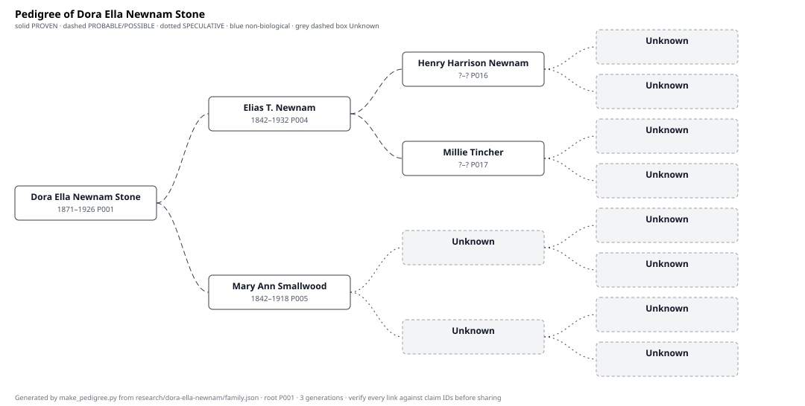
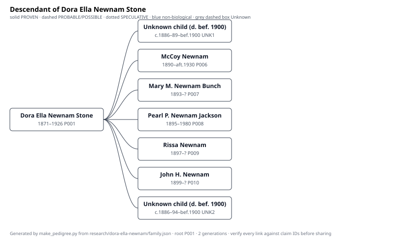
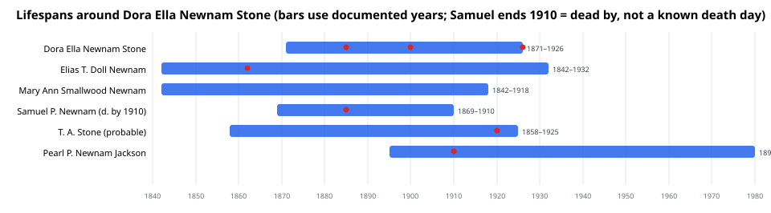
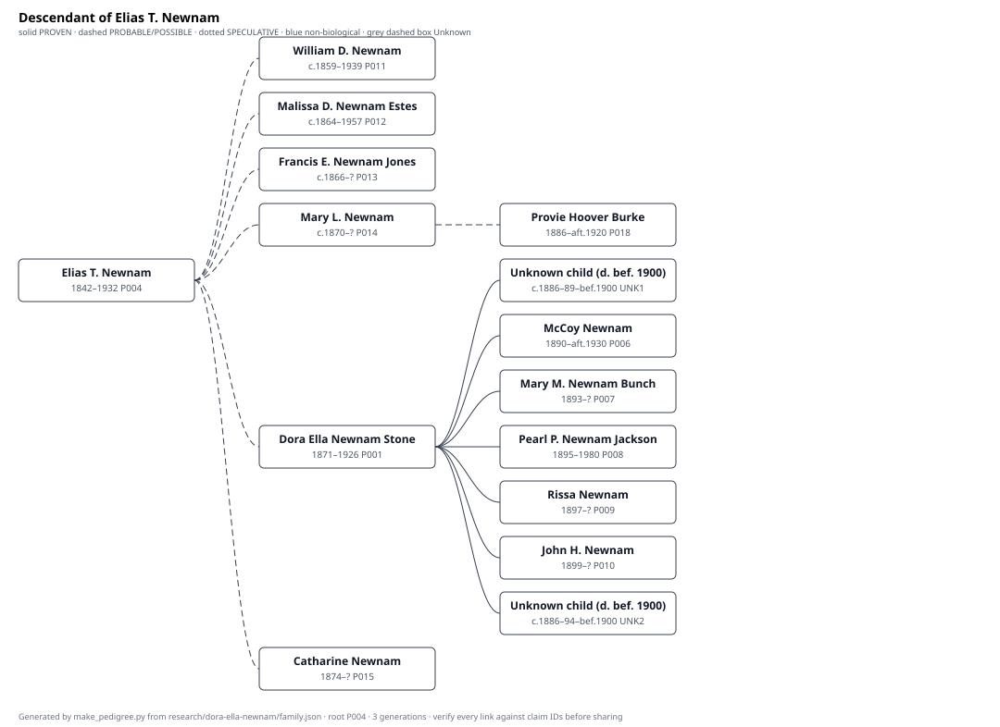
The crops used in the chapters sit on these full sheets. A reader who wants to check a neighbor, a dwelling number, or an enumerator’s hand should start here. None of these pages contains a portrait. A 2020 view of Beattyville’s Main Street is included only as a later street in the same town.67 The Fourche La Fave plate in chapter 5 is a 2013 landscape of Tom A. Stone’s 1920 drainage, not a picture of him.64
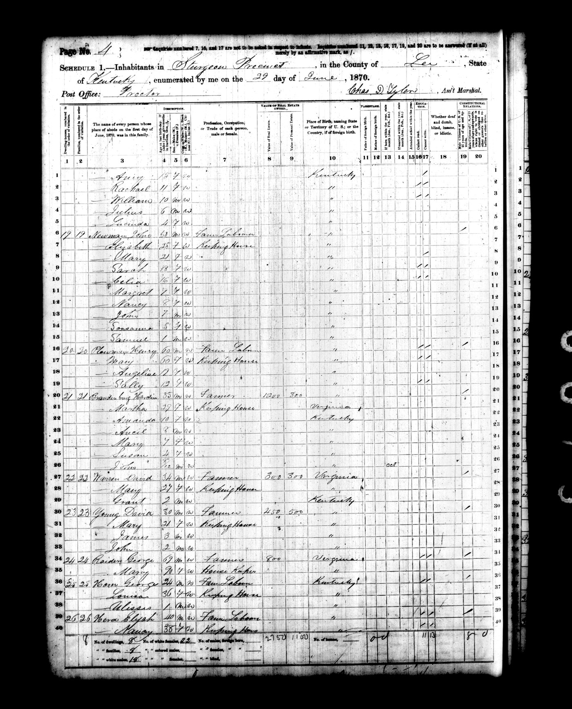
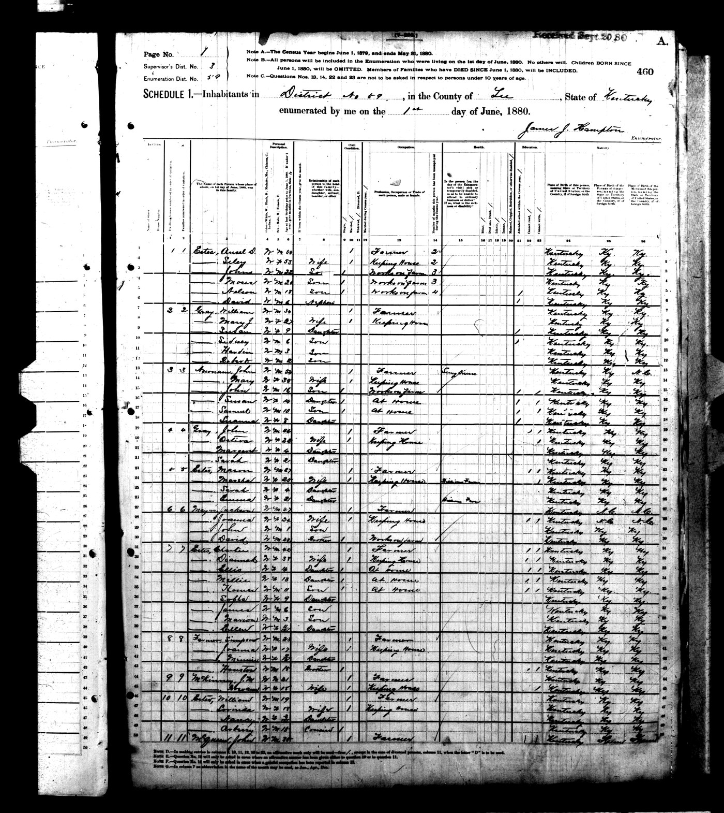
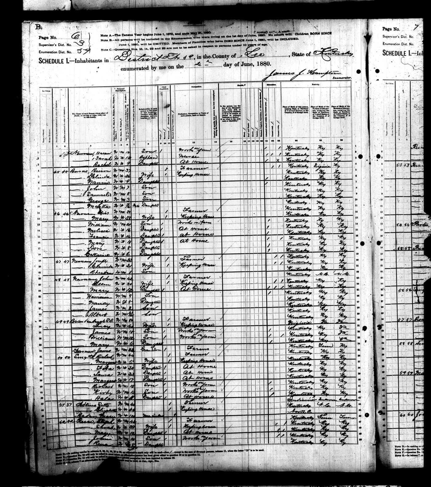
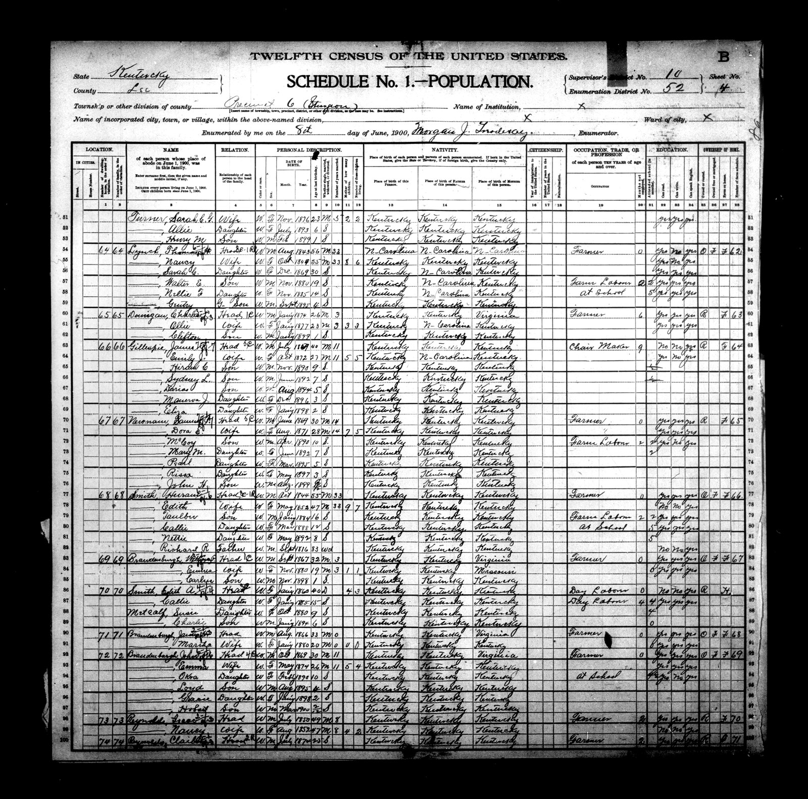
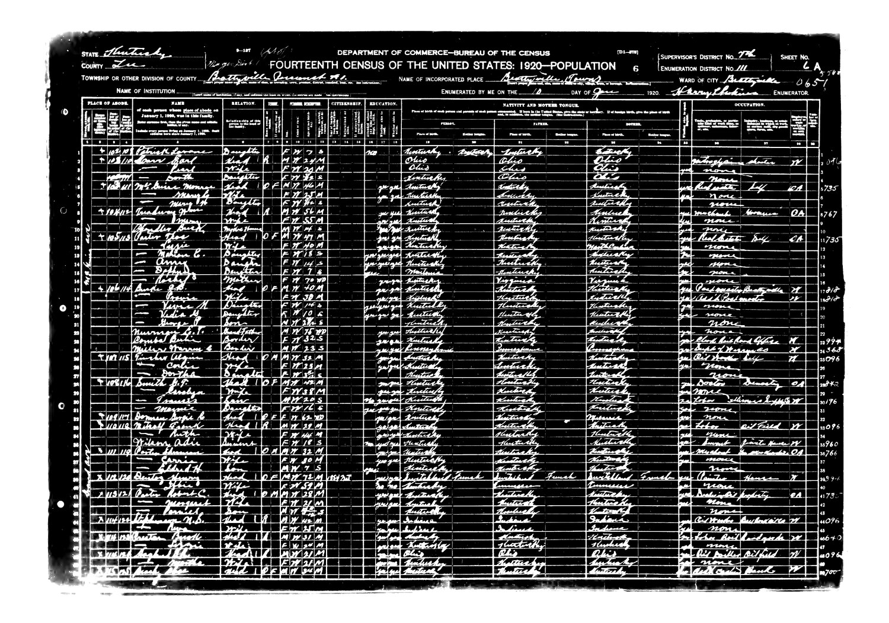
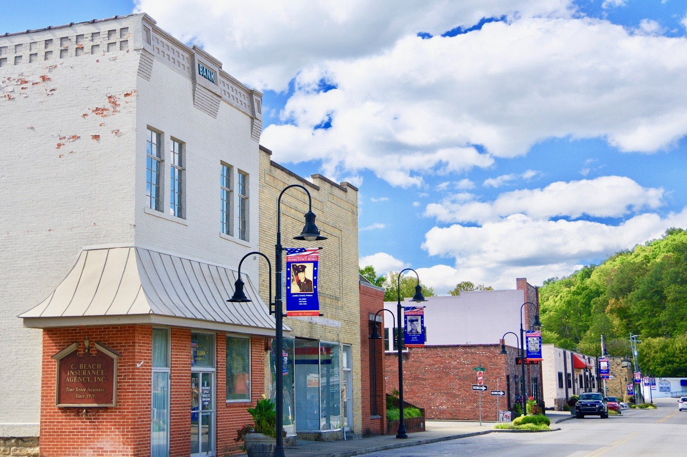
| # | Dispute | Resolution in this book |
|---|---|---|
| 1 | Birth 11 Aug 1868 vs August 1871 | Year 1868 disproved. Year 1871 proven. Day 11 possible. |
| 2 | Parents born Owsley (1885) vs Elias born Clark | Prefer Elias’s own records: Clark. Names still probable. |
| 3 | Samuel died 24 February 1906 | Date speculative. Death before April 1910 probable. |
| 4 | Tom A. Stone 1845 vs ~1858 | Identification probable. Birth year unresolved. |
| 5 | Mary M. 1892 vs 12 June 1893 | Both printed. Not a same-person threat. |
| 6 | Death “about 1930” | 1930 disproved by the 1926 certificate. |
| 7 | “Mammoth, Ark.” | Printed as written. Not corrected to Nimrod. |
| 8 | S. P. Newnam × Rosa Banks, 1904 | Not merged. |
| 9 | Samuel’s mother Mary vs Elizabeth | Open. Two households, one age-matched boy. |
| 10 | A third (Peebles) marriage | Not supported. Two marriages stand. |
| 11 | Which 1900 Missouri Thomas is 1920 Tom A.? | Open. Douglas original read; not merged. Dunklin village nil. Soundex Vol 33 = Greene; original unread. |
| 12 | 1920 “Grand Father” of C.B. Burke | Resolved: grandfather of Provie, the wife. |
| 13 | 1910 ED 99 enumerator | Surname Treadway on sheet 8A (given name uncertain). Brandenburg / Newnam withdrawn. |
| 18 | Edward Newnam age 16 vs 20 at the 1936 wreck | Same wreck. Do not average. Home-county Enterprise (16) preferred as possible-to-probable. |
| 20 | Frank of Berea vs Grant of Berea | Open — do not merge. Grant living 1951; omitted from Everett’s 1939 brother list. |
| 21 | Callie Newnam d. 1926 vs Callie Spicer living 1944 | Resolved — two women. 1926 Callie is Everett’s wife (Moore). Spicer is the sister. |
| 22 | Frank Newnam d. 1928 St. Helens vs Frank of Berea living 1939 | Resolved — two men. 1928 Frank born 1853, parents William × Rhoda Tincher. |
| 23 | Grant Newnam “late” in 1955 vs 1970 death | Resolved. Grant died 9 December 1970. The 1955 wording is couple-style error. |
| 24 | Mother’s given name Minerva vs Mininerva vs Sarah Veneable | Open, upgraded. 1880 Sarah M. + 1936 Sarah M. Evans (Lee Roy Veneble × Ratchel McQueen) make one woman Probable. Dual given “Sarah Minerva” still unprinted. |
| 25 | 1904 VS “born Owsley” vs VA nativity | Open. Prefer 1880/1900/1910 + 1936 extract (Virginia). 1904 line is the outlier. |
| 26 | John of Owsley’s death | Open on the date. 1950 Woodford John 70 + Cora 56 is Probable the 1940 couple. 1966 Woodford index row is now Probable. Do not print 1966 as fact. |
These are exact retrieval paths, not a homework list. Free substitutes were tried first.
| Repository | Ask for | What it should settle |
|---|---|---|
| Ancestry, Arkansas Death Certificates, 1914–1969 (user login) | Stone, Thomas / Tom / T. A., 1925, Yell or Perry | Conflict #4 |
| Same | Stone, Dora, Yell, 23 Aug 1926, cert. 1524 | Re-read “Mammoth”; confirm image fields |
| FamilySearch, signed in | Lee Co. Marriages, image Q2QD-PZHL, 10 Dec 1885 | Book 2 transcription |
| Yell County Clerk, Danville; Perry County Clerk, Perryville | Marriage index 1920–1925, Newnam/Newman × Stone | m2 date and place |
| Lee County Clerk / Kentucky Archives | Samuel P. Newnam burial or church minutes, 1900–1910 (no county VS for 1905–1910) | Close the 1906 lore |
Internet Archive 12thcensusofpopu855unit | Greene Co. MO, Campbell Twp ED 37, sheet 17, line 25 | Original for Soundex Thomas A. 32 |
| Arkansas State Archives / Plainview, Danville, or Dardanelle library | Yell County Journal (LCCN SN90050035); Danville Democrat; Dardanelle Post-Dispatch (SN89051008) late Aug 1926 | Obituary, kin list |
| FamilySearch (sign-in) | Lee films 127913 / 127891 / 127869 / 964964 / 156057 / 97277 | Samuel P. administration / tax window |
| FamilySearch 1146342 / NARA M1509 KY45/24/74 | John H. b. 1899; McCoy b. 1890; Luther b. 1891 | WWI cards unread |
| Fayette DC vol. 060 cert. 29556 | Grant Newnam 9 Dec 1970 image | Index already read |
| Lee 1961 / Estill 1961 certificate images | Callie Spicer / Fred L. Newman | Extracts already read |
| Carter Cove Cemetery (photograph or Find A Grave request) | “Newman, Dora”; “Stone, Thomas 1845–1925” | Confirm the 1993 reading |
| FamilySearch, signed in | Arkansas statewide bride index, Dora / Peebles / Stone, 1917–1926 | Residual H3 |
Citations follow Evidence Explained practice as adapted in the case file: creator, title, type, repository, identifiers, URL and access date, and whether the image, an index, or a transcription was seen. “Prior session” means a record logged in this case before 28 October 2026 and not re-opened for this book.
10thcensus0427unit frame n730. Image seen. File sources/census/1880-lee-ky-ed59-sheet6-p730-elias-dora.jpg, SHA-256 ce48bc3c6a4021976aa480def6b1cc080aced108005d2861f8c144396039b36f. Diplomatic transcription: “08-transcriptions.md,” DOC001. Claim C003.soundex1880ky055 frames n2105–n2106. Images seen. SHA-256 n2105 ba11d7beb4a9771b19d16ea60c5bb31ce51ca8c74013bcf516f96061b77a4415; n2106 3fd163617fc3f2a936e8b4c4a958541d5fcdb0274c5ca8f588f29967dc2604c0. DOC002–DOC003.10thcensus0427unit frame n725. Image seen. File sources/census/1880-lee-ky-ed59-sheet1-p725-john-samuel.jpg, SHA-256 3ee18d923c7a2b59a9a063825323bc729f5da902cfd86cf44f04a6d11957ebcb. DOC005. Claims C060, C061 (identification of Samuel 11 as P002 is probable).15414c93151a23b408e3ae320a80973b956e4d25f4392bea489ec2bd14e7a294. Claim C063, proven rejection.populationschedu0481unit frame n69. Image seen. SHA-256 696f3dcfb500287ace8e76842d6ec1746c7d6d723381b00c41231bffe970534d. Transcription check: USGenNet 337b. DOC007. Claim C062. Conflict #9.12thcensusofpopu537unit BookReader page 940 (scale-2 JPEG). Image seen this session, 28 October 2026. Files sources/census/1900-lee-ky-ed52-sh4b-sturgeon.jpg (SHA-256 af0fdcf1dc7070e64e5d5c05eb729b5a14d44a628eab790ef7a72c13009192fb) and household crop …-hh67-crop.jpg (SHA-256 9143f399155180251f93101adc7137065558a9372f4de93bfe9721bb75907940). Claim C011 upgraded from transcription-only to original.~kylee, accessed 27 October 2026. Transcription only as a check on endnote 19. Neighbors 66 Gillespie and 68 Huram Smith agree with the original sheet.python3 scripts/stats.py proportion --k 2 --n 7. Two of seven is a household report, not a county rate.soundex1910ky124 printed pp. 342–343. Images seen. Six Samuel/Sam cards; none is P002. Claim C039.13thcensus1910po478unit PDF pp. 551–578. Images seen. Claims C088, C089. Four-plus Newnam houses present and rejected.soundex1910ky124; Arkansas N-550, soundex1910ar087; Missouri N-550, soundex1910mo184; Tennessee N-550 Coy/Dora/McCoy windows, soundex1910tn073; Kentucky S-350 Dora Stone, soundex1910ky154; Oklahoma N-550 Newman block, soundex1910ok091; Texas N-550 Newman window, soundex1910tx173; Kentucky P-142 Peebles, soundex1910ky128; Arkansas P-142 D-window, soundex1910ar091. Rejected same-name women are listed in “04-evidence.md.” Claims C030–C039, C068, C069, C081–C083.soundex1920ar104 and soundex1920ar086. Claims C032, C050 context. Do not redo.soundex1920ky117 n4200–n4205. Three Dora cards rejected; E-tab follows. Images seen. Claim C064.soundex1920ky144; Oklahoma N-400–N-630 soundex1920ok102; Tennessee N-450–O-165 soundex1920tn107; Missouri N-500–N-650 soundex1920mo176. Claims C071–C074, probable negatives.14thcensusofpopu586unit PDF page 14. Image seen (inverted JPEG). SHA-256 full sheet 1204695da599b00c4080d8d08220e096669c861b93b0429c53278176bee66bfd. DOC016. Claim C091. Derivative check: USGenNet Beattyville Precinct 1.14thcensusofpopu076unit; transcription ARGenWeb 1920 Howell. Claim C050, C014. Not re-imaged this pass.12thcensusofpopu853unit PDF page 413. Image seen. Claims C101, C102, C092. Soundex derivative (IA soundex1900mo244) errs on Ossie P. / Etta / Nancy’s dates. Not merged with 1920 Tom A. Stone.research/dora-ella-newnam/family.json and visuals/life.csv with the genealogy-detective scripts make_pedigree.py and make_charts.py. Register: “10-visuals.md,” V001–V004. Solid = proven; dashed = probable or possible. Living people omitted.File:Lee County Courthouse, Beattyville.jpg, public domain. (2) Historic American Buildings Survey, “Lee County Courthouse, Main Street, Beattyville, Lee County, KY,” survey KY-39, Library of Congress HABS KY-39, photograph 1 (south and west elevations). Federal HABS work is public domain. Later views of the building that held Lee Marriage Book 2 (endnote 12).File:Fourche La Fave River.jpg, public domain. Howell Township, where Tom A. Stone was enumerated in 1920 (endnote 45), drains to this river. Not a picture of any person in this book.File:Beattyville-Main-Street1-ky.jpg, CC BY 4.0. Credit: Brian Stansberry. Later streetscape of the town in Plates A and 7.12thcensusofpopu854unit JPEG pages 130–143. Original images seen 28 October 2026. Enumerator Chas. H. Hutchinson. No Stone / Thomas A. / Matilda / Gertrude household. Files sources/census/1900-dunklin-ed47-*. Claim C105.sources/soundex/mo1900-s350-p1684-stone-thomas-a-32-dunklin.jpg. Volume 33 = Greene County Soundex volume (slavens.net). Claim C107.12thcensusofpopu855unit jp2 page 812. Enumerator Joshua Firtell, 26 June 1900. Original image seen. Line 1: Stone, Elizabeth, mother-in-law, Aug 1842. Line 25 is not Thomas A. Claim C112.13thcensus1910po478unit jp2 page 564. Enumerated 30 April 1910. Enumerator surname Treadway; given name not safely read. Prior “Elam Brandenburg” / “Elton E. Newnam” readings are not supported by this JPEG. Claim C113.12thcensusofpopu855unit jp2 pages 817–830, 834, 840. Original images seen 28 October 2026. No second Thomas A. / Matilda / Gertrude household on those sheets (18A is endnote 78). Claim C115.12thcensusofpopu855unit jp2 page 814. Enumerator Joshua Tuthill, 27 June 1900. Original image seen. Stone, Thomas A., head, Feb 1868, age 32; Matilda, wife; Gertrude M., daughter; Jenkins, Ivory, grandmother. Files sources/census/1900-greene-ed37-sh18a-full.jpg and crops. Not merged with 1920 Tom A. Stone of Perry County, Arkansas. Claims C117, C118.13thcensus1910po769unit jp2 pages 420–480. Full-page OCR on name columns: no Newnam, Newman, Sullivan, or Letha Viola. Vision samples include Dongola (a Hart daughter Letha, age 3 — not Sullivan). Claim negative for this slice. Endnote supports B007 only.12thcensusofpopu855unit even PDF pages 836–916. Name-column crops in sources/census/b040-ed38-bsides/. Image seen. No Stone / Thomas A. / Newnam / Dora household. Combined with the A-sides (C280) this closes ED 38 and finishes Greene 37–43. Claim C281; source S267.beatty (six issues only). OCR + selected JPEGs in sources/press/. Uncle Doll Newman/Newnam still in Beattyville. Same-person test vs Elias T. “Doll” Newnam (P004): nickname + town + still living 1928–April 1932 (he died 18 April 1932). Claim C284; source S270.beatty six issues omit 1926. (2) University of Kentucky microfilm holdings item 65438 lists 1909–11, 1915, 1924–25, 1928, 1932 — not 1926. (3) IA Solr 30 October 2026: 0 items for Yell County Journal 1926 and 0 for title Beattyville Enterprise year 1926. (4) Genealogy Trails Yell obituaries landing nil. Claims C293, C301, C302. Retrieval: Newspapers.com; UK film S 90-033; Arkansas State Archives.digitized: false. IA Solr 0 for those 1926 titles / “Dora Stone” 1926. LOC CA “Stone Ola Arkansas” 1926 = Osceola, not Yell. Claims C314, C315, C343, C346, C347; sources S283–S286, S315–S317.Every source used in the case file, with class (O original / D derivative / A authored) and a link when one exists. “Prior” means the image was read in an earlier session and was not re-opened for this book. Full Evidence Explained rows live in 04-evidence.md.
| ID | Source | Class | Link |
|---|---|---|---|
| S001–S002 | 1880 KY Soundex N-550, Elias Newnam + continuation (Dora 8) | D of O | IA soundex1880ky055 |
| S010 | 1880 U.S. census, Lee KY ED 59 sh 6 dw 46, image | O | IA 10thcensus0427unit |
| S004 | Lee Marriage Book 2, Kendrick transcription — Samuel P. × Dora Ella, 10 Dec 1885 | D | USGenNet Book 2 |
| S005 | 1900 Sturgeon ED 52 sh 4B dw 67 — original image (this book) + Kendrick transcription check | O + D | IA T623-537 · RootsWeb |
| S003 | Arkansas death certificate, Dora Stone, 23 Aug 1926, cert. 1524 | O (prior) | Ancestry AR deaths (index) |
| S006–S007 | NUMIDENT, Mary Magdalene Bunch; Pearl P. Jackson | O (prior) | SortedByName Newman · Jackson |
| S020–S028 | 1910 Soundex/Miracode negatives KY/AR/MO/TN + KY S-350 + KY N-550 Samuel | D (neg.) | KY N-550 · AR · MO · TN · KY S-350 |
| S030 | WikiTree Newnam-49 / Newnam-48 (lore; 1930 death disproved) | A | Newnam-49 |
| S040 / S044 | 1880 ED 59 sh 1 dw 3 (Samuel 11); sh 2 McQueary Samuel 13 | O | IA T9-427 |
| S042–S043 | 1870 Sturgeon hh 19, John + Elizabeth + Samuel 1 | O + D | IA M593-481 · USGenNet 337b |
| S045–S046 | 1920 KY Soundex N-550 Dora rejects; E.T. Neuman 75 Beattyville | D | IA soundex1920ky117 |
| S047 / S068 | Lee death index 1911–1929 N + year extracts 1912–1929 | D (neg.) | kdi/n.html |
| S048 | 1870 Owsley Travellers Rest, Elias household, no Dora | D | USGenNet |
| S049–S050 | 1910 OK / TX Miracode Newman windows | D (neg.) | OK · TX |
| S051 / S041 | 1910 Owsley Buck Creek, Elizabeth + Pearl; Dora absent | D / O prior | USGenNet |
| S052–S056 | 1920 Soundex OCR: KY S-350; OK/TN/MO N-550 Dora Newman | D (neg.) | KY S · OK · TN · MO |
| S054 | Will of Elizabeth Newnam, 1922/1934 | D | USGenNet |
| S057 | 1910 Lee Proctor, Elisa & Mary Newnam, no Dora | D | USGenNet |
| S062–S063 | 1910 KY / AR P-142 Peebles/Peeples (no Dora ~39) | D (neg.) | KY P-142 · AR P-142 |
| S064 | Lee Marriage Books 5–19 (1896–1926), no Peebles, no Dora remarriage | D (neg.) | USGenNet marriages |
| S065 | Perry Co. AR Books F–G (1916–1930), no Dora × Stone | D (neg.) | ARGenWeb |
| S067 / S089 | 1910 Sturgeon ED 99 original, sheets 1A–13B | O | IA T624-478 |
| S070 / S085 | 1900 MO S-350 Thomas/Tom + Douglas Buchanan original | D + O | Soundex · T623-853 |
| S073 | 1920 Beattyville ED 111 sh 6A, Burke + E.T. Newman, original | O | IA T625-586 |
| S074–S076 | Book 7 Burke × Hoover; 1900 Proctor Elias + Provy; George Burke | D | Book 7 · 1900 Proctor |
| S077 / S080–S082 | Lee VS deaths 1874–78 / 1900–04; Proctor Cemetery | D (neg.) | vsd2 · Proctor |
| S078 | Daniels & Cossey, Carter Cove reading, 5 Feb 1993 | D | Newman · Stone |
| S083–S084 | W.D. Newnam 1939 notice; Lee Book 3 Durbin / Hoover 2nd | D | Obituaries N · Book 3 |
| S086–S087 | High View / Newman Cemetery 2001; Booneville Assoc. 1883–1904 | D (neg.) | hccc · leeows |
| S090 | 1900 Dunklin Village of Campbell ED 47 sh 1–7 originals — nil Stone | O (neg.) | T623-854 |
| S091–S093 | Owsley VS deaths 1907/08, 1909 (Lester Newnam), 1910 | D | 1909 |
| S094–S096 | Greene Soundex vol. 33 key; KDLA Lee inventory; Perry various deaths | A / D (neg.) | Slavens · KDLA |
| S097 | 1900 Greene Campbell Twp ED 37 sh 17A — Elizabeth Stone MIL; not Thomas A. | O (neg.) | T623-855 |
| S098 | 1910 Sturgeon ED 99 sh 8A header — enumerator Treadway | O | T624-478 |
| S103 | 1900 Greene ED 37 sh 18A — Thomas A. Stone / Matilda / Gertrude (original) | O | T623-855 |
| S099 | 1900 Greene ED 37 sh 19B–24A + ED 38 sh 1A/4A — nil second Thomas A. household | O (neg.) | T623-855 |
| S100 | 1910 Bollinger Liberty ED 5 jp2 420–480 — nil Newnam/Sullivan | O (neg.) | T624-769 |
| S101–S102 | Robert Newnam Pebworth FAN — Farley obit + 1900 Owsley Booneville | D | Obits F · 1900 Booneville |
| S102–S105 | 1920 AR Soundex / Howell Twp Tom A. Stone (prior) | O/D prior | AR S-350 · Howell 1920 |
| S024 | McCoy Newnam × Letha Sullivan, 18 Feb 1917, Ola (prior) | D/O prior | FamilySearch / county license — image not in this file |
| S267 | 1900 Greene ED 38 every B-side name column (41 PNGs) | O (neg.) | T623-855 |
| S268–S269 | yellcountyobits compiled Carter Cove rows — Newman, Dora; Stone, Thomas | D | p.64 · p.83 |
| S270–S271 | Beattyville Enterprise IA beatty + UK film catalog | OCR / catalog | IA beatty · UK 65438 |
| S277 | Lee Book 23 — Clay Dunigan × Ladona Newman, 15 Mar 1932 | D | marrbook23 |
| S278 | Everett Newnam obituary, Enterprise 14 Dec 1939 | D | obits N |
| S294 / S297 | Rev. Luther Newnam d. 28 Feb 1945 — Enterprise + 1945 DC extract | D | obits N |
| S298 | Lee Book 10 — Shelby Newnam × Gracie Brandenburg, 4 Sept 1913 | D | marrbook10 |
| S307 | Lee Book 5 — Grant Newnam × Martha Brandenburgh, 12 Aug 1899 | D | marrbook5 |
| S309 | Clifton Newman, Berea Citizen 1 Oct 1936 | D | obits N |
| S310–S311 | Martha Brandenburg Newnam 1951; William Newman 1955 (Grant’s son) | D | obits N |
| S312 | Linda Lou Spicer, Enterprise 11 May 1944 — Robert Spicer grandparents | D | obits S |
| S315 | Dardanelle Post-Dispatch LOC item, LCCN SN89051008, not digitized | catalog | sn89051008 |
| S326 | LDSGenealogy FHL2 pointers — FS catalog IDs 127869 / 964964 / 127913 / 127891 / 156057 / 97277 (images unread) | catalog | Lee court |
| S329 | Lee 1915 deaths — stillborn female Newnam, 29 May 1915, Grant × Martha | D | 1915.html |
| S330 | Lee 1928 deaths — Frank Newnam, St. Helens (reject vs Berea contractor) | D | 1928.html |
| S331 | Lee 1926 deaths — Callie Moore Newnam + Dorothy (not Spicer) | D | 1926.html |
| S332 | Melissa Newnam Estes Miller, Enterprise 18 Apr 1957 | D | obits M |
| S334 | Berea Cemetery inventory — nil Grant / Frank / Clifton Newnam | D (neg.) | Madison Library PDF |
| S338 | LDSGenealogy Lee military — FS 1146342 WWI cards unread | catalog | Lee military |
| S340 | RTR KY death index 1951–55 Newman/Newnam extract — nil Grant | D (neg.) | IA RTR KDI |
| S341 | RTR KY death index 1939–89 target givens — Grant 1970; Fred 1961; Kate 1941 | D | IA RTR KDI |
| S344 | 1920 Heidelberg hh 101–106 Grant + Martha Brandenburg | D | Heidelberg |
| S347 | SortedByName Grant Newnam — b. 10 Jun 1876; d. 9 Dec 1970 | D | index_6 |
| S370 | Lee 1961 deaths — Callie Spicer, parents Daniel Newnam × Sarah Veneable | D | 1961 deaths |
| S373 | 1900 Owsley Buck Creek hh 324/326 — widow Minerva + Callie / Evert / David F. | D | 1900 Buck Creek |
| S374 | Lee Book 11 — John Newman × Cora Brandenburg, 20 Nov 1915 | D | marrbook11 |
| S375 | 1910 Owsley Buck Creek — John+Lillie; Everet; Grant 21; Elizabeth+Pearl | D | buck1910 |
| S376 | 1870 Lee Beattyville p.307b — Daniel Newman 22 in Brandenburg hh 23 | D | 307b |
| S379 | Lee 1947 deaths — Sarah Newman = Damrel (reject vs Veneable) | D | 1947 deaths |
| S384 | 1880 Owsley Buck Creek hh 100/104 — Daniel 29 + Sarah M. 28 + Melissa 4 + John L. 1 | D | 1880 Buck Creek |
| S386 | Owsley 10 Feb 1909 — Grant Newnam 19 × Dova Cole; 1913 Clara at T. B. Venable’s | D | 1909a |
| S387 | Owsley 1915 — Lillie Newman d. 12 Jan 1915, parents J. B. Isaacs × Sally Flanery | D | 1915dc |
| S390 | Lee 1936 — Sarah M. Evans d. 15 Sep 1936 Lower Buffalo, vol. 051 cert. 25155 | D | 1936 deaths |
| S394 | 1900 Owsley Buck Creek hh 290/292 — Malissa Bowman 3/1876 KYKYVA | D | 1900 Buck Creek |
| S395 | 1940 Owsley ED 95-3 hh 54 — John Newnam 63 + Cora 47 + Robert 21 | D | 1940 95-3 |
| S396 | RTR KDI — John L. 1966 Woodford; Cora P. 1981; Cora B. 1988 | D | IA RTR KDI |
| S399 | 1950 Owsley ED 95-3 — Clarence Newman + Mae, not John+Cora | O | NARA 1950census |
| S400 | 1950 Madison — Dewey Newman 26 reject; Shelly+Grace Richmond | O | NARA 1950census |
| S401 | TFKRHA Owsley 1843–80 — nil Daniel × Sarah Venable | D | TFKRHA marriages |
| S402 | Woodford 1966 workaround — John Wesley reject; Duell-Clark path | D | GT Woodford obits |
| S403 | 2025 State-Journal notice — David Grant Newman Jr. lead only | A | State-Journal |
| S404 | 1950 Woodford ED 120-13 — John 70 + Cora 56 | O | NARA 1950census |
| S405 | 1930 Lee EDs 1–11 — Everett KYVAKY; Grant 53; nil John+Cora head | D | Lee 1930 |
| S406 | 1890 Owsley veterans — nil Newnam six precincts | D | 1890 veterans |
| S407 | TFKRHA 1930 D3 — Arthur Newman 54 + Grant 14; D7 unread | D | TFKRHA |
| S408 | 1950 Lee — Cara P. = Plummer; Johnia / Boyle Cora B rejected | O | NARA 1950census |
Census and Soundex plates are U.S. federal records and are public domain. Context photographs are credited below. No plate is a portrait of Dora.
| Plate | File | Rights / credit |
|---|---|---|
| A | loc-beattyville-1930.jpg | Caufield & Shook, 1930; LOC item 2010651160; “no known restrictions” |
| B | loc-fsa-south-fork-fence-1940.jpg | Marion Post Wolcott, FSA, Aug 1940; LC-USF34-055679-D; U.S. work |
| C | wiki-lee-courthouse-2014.jpg | Nyttend, 14 Jun 2014; Wikimedia Commons, public domain |
| D | habs-lee-courthouse.jpg | HABS KY-39, Library of Congress; public domain |
| 1–2, 1b | 1880 schedule + Soundex | NARA T9-427 / T750; Internet Archive; public domain |
| 3–4, 13–15 | 1870 / 1880 sheets | NARA M593-481, T9-427; public domain |
| 5, 16 | 1900 Sturgeon ED 52 sh 4B | NARA T623-537; public domain |
| 6, 6b | 1910 Sturgeon ED 99 | NARA T624-478; public domain |
| 7, 17 | 1920 Beattyville ED 111 sh 6A | NARA T625-586; public domain |
| 7b | wiki-fourche-la-fave-2013.jpg | Mason Brock, 14 Oct 2013; Wikimedia Commons, public domain |
| 8 | 1900 Douglas Co. MO Thomas+Nancy | NARA T623-853; public domain; not merged |
| 9–12 | SVG charts | Generated from family.json / life.csv; case file |
| 18 | wiki-beattyville-main-2020.jpg | Brian Stansberry, 3 Oct 2020; CC BY 4.0 |
The free transcripts of Debi Houser Kendrick (USGenNet / ALHN / RootsWeb ~kylee) made Lee and Owsley County marriage books, census pages, wills, and death extracts usable from a machine that cannot log into FamilySearch or Ancestry. Internet Archive holds the NARA census and Soundex film used as originals. The Library of Congress and Wikimedia Commons supplied the place photographs. Errors of identification remain the compiler’s.
Living descendants are omitted by design. Anyone who holds a photograph of the stone at Carter Cove, the 1885 marriage-book page, or the 1925 Arkansas certificate of T. A. Stone can close the questions this book leaves open.